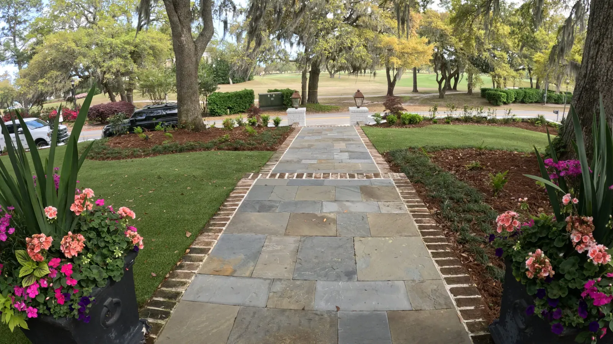

Mulch & Bed Installation in Charleston, SC

Mulch and Bed Edging The Cheapest Way to Make a Yard Look Maintained
Fresh mulch and a crisp bed edge do more for how a property looks from the street than almost anything else you can buy for the money. It is also the layer that keeps the soil covered, which is what the plants care about.
We mulch beds on properties we have landscaped and on properties we have not, across Charleston, Mount Pleasant, West Ashley, James Island and Summerville.
What It Costs
| Mulch, installed | $105 a yard |
|---|---|
| Mulch refresh | once a year |
| Pine straw refresh | two to three times a year |
Bed size and access decide the total. We measure the beds rather than estimating from the street.
Mulch or Pine Straw
The real difference between them, for a homeowner, is the schedule. Mulch goes down once a year. Pine straw needs refreshing two to three times a year, because it breaks down and packs faster. Pine straw costs less per application and more per year of upkeep, and it is the traditional Lowcountry look on a wooded lot.

Bed Edging
An edge is what separates a bed from a lawn that is slowly eating it. We install steel, plastic and brick edging.
- Steel gives the cleanest line and all but disappears once it is in.
- Plastic is the budget option and does the job of holding a line.
- Brick is a finished, permanent border, and the one that suits a Charleston house best.
The Mistake We Fix Most Often
Mulch needs to cover the ground — not be built up around tree trunks.
Piling mulch into a cone against a trunk is everywhere in this area, and it holds moisture against the bark of the tree that is usually the most valuable plant on the property. We pull mulch back off trunks as part of doing the beds, whether or not we planted the tree.
Depth is the other half of it: enough to cover the soil, and no more.
How We Do Beds
- Free consultation and measurement of the beds.
- Edging set where beds need a defined line — steel, plastic or brick.
- Mulch or pine straw laid to cover the ground, and kept off the trunks.
- Refresh on schedule: mulch annually, pine straw two to three times a year.
Beds are the finishing layer on a landscape install and sit alongside plants and trees, sod and irrigation.
Where We Offer Mulch and Bed Edging
We install mulch and edge beds throughout:No matter where you’re located in the Lowcountry, we bring prompt, reliable service and a commitment to quality.
Frequently Asked Questions
How much does mulch cost installed in Charleston?
$105 a yard installed. The total depends on how much bed you have, which we measure rather than estimate.
How often should mulch be replaced?
Mulch once a year. Pine straw needs refreshing two to three times a year, because it breaks down and packs down faster.
Mulch or pine straw?
Mulch is once a year; pine straw is two to three times a year but costs less per application. Pine straw is the traditional look on a wooded Lowcountry lot.
How deep should mulch be around a tree?
It should cover the ground, and it should not be built up around the trunk. Mulch piled against bark holds moisture where you least want it. We pull it back off the trunks as part of the work.
What kind of bed edging do you install?
Steel, plastic and brick. Steel gives the cleanest line, plastic is the budget option, and brick is a permanent finished border.
Request Free Landscape Consultation
Book Your Mulch and Bed Service TodayFresh mulch and a crisp bed edge are one of the easiest ways to elevate your landscape’s appearance and health. Contact us to schedule a mulch estimate.
This site is protected by reCAPTCHA. Google’s Privacy Policy and Terms of Service apply.